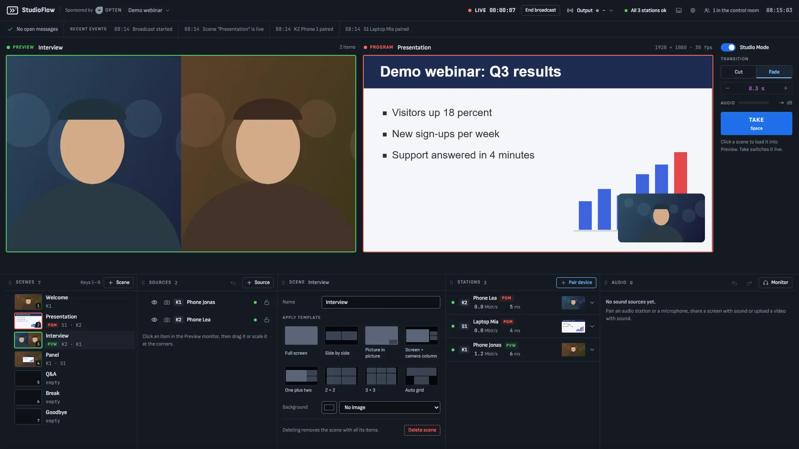
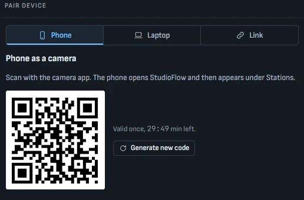
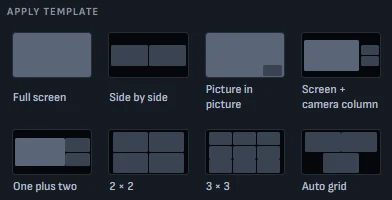
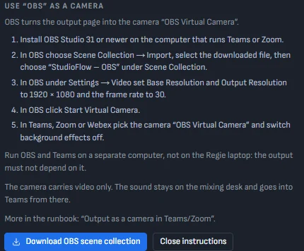
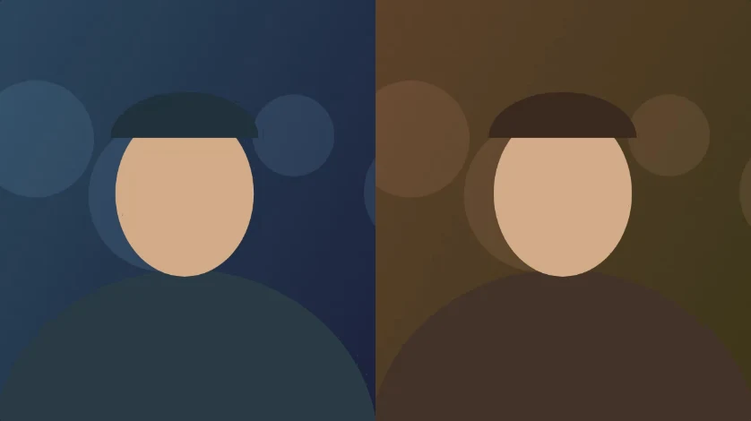

Go live
from any phone.
StudioFlow is a live production studio in the browser. Phones and laptops become cameras, you switch scenes like in OBS, and the program goes on air. On your own server, open source.
Free · MIT licence · one docker compose stack

The real Regie. People and slides are synthetic demo content.
So yes,
your phone is
the camera.
A phone scans a QR code and sends its camera. A laptop shares its screens. A laptop at the mixing desk sends the sound. No app, no account, no cables to a video mixer: everything travels over the Wi-Fi you already have, to a server you run.
-

Scan a QR code. Paired.
Phones by QR code, laptops by a short URL and a check code, guests by a one-time invite link. No accounts.
-

Red frame, you're on air.
Every phone shows its tally, so the person holding it knows when it is in the program.
-

Layouts in one click.
Full screen, side by side, picture in picture, grids. Then move, scale and crop freely.
-
Every station, at a glance.
A lamp, the bitrate and the latency per device. An outage turns amber or red where you are looking.
-

Out to OBS, Teams or Zoom.
The program is a web page behind a link you can revoke. A streaming proxy embeds it, or OBS turns it into a camera with a scene collection you download.
Also inside: hold frames and endless reconnect, an audio mixer with an audio station at the desk, texts and lower thirds, camera control from the Regie, light and dark mode, English and German, an audit log and scheduled backups.
Switch like a pro.
Cut. Fade. Take.
Build the next scene in the preview while the program is on air. One press on Take and it fades over. Try it here, with pictures from the real Regie.


Presentation is on air.
Wi-Fi drops.
The show
doesn't.
- A phone loses the Wi-Fi.
- The audience keeps the last frame, softly blurred.
- The phone reconnects by itself. Nobody has to touch it.
- The Regie shows it where you are already looking.
Everything stays
on your network.
Devices talk only to your server. Picture and sound travel over WebRTC through the LiveKit media server inside the stack, and the output page hands the program to OBS, a streaming proxy, or Teams and Zoom as a virtual camera.
No app to install.
No cloud account.
No video mixer to carry.
Just docker compose up.
This all takes
three commands.
You need Docker (Engine on Linux, Docker Desktop on Windows or macOS) with Compose 2.24 or
newer. Download
docker-compose.yml from the
latest release, then:
-
1
Start the stack
docker compose up -d -
2
Read the setup code
docker compose logs api -
3
Open the Regie, follow the wizardAccept the certificate warning once, enter the code, then scan the QR code with a phone.
https://<this computer>:8443/
Open ports 8443/tcp+udp 7881/tcp 7882/udp ·
Certificates, firewall, backups and updates:
operations guide
Click around.
Right here.
The clickable prototype the Regie started from, with synthetic data. It runs in this page and sends nothing anywhere.